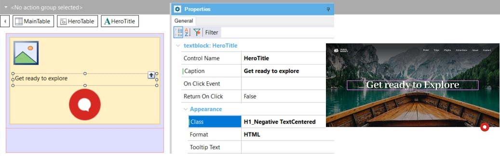

Design System Classes can be as granular as you want them to be. The most atomic level is a class defined to give value to a single property, although it doesn't seem to be very useful in this case because you are losing exactly what you want to achieve: abstraction.
For example, you could have a class that is only used for centering text:
.TextCentered
{
text-align: center;
}
In that case, instead of defining the H1_Negative class for the main titles on a dark background including that property as well, you probably would have left it unspecified:
.H1_Negative {
color: rgb(255,255,255);
font-family: AbhayaLibre-Bold;
font-size: 95px;
font-weight: bold;
letter-spacing: -1.72px;
line-height: 75px;
text-align: center;
}
Then, you would assign both classes combined to the Text Block control:

By breaking down the classes to the desired granularity, you can use them combined later on.
Also, you can make this combination now as a higher abstraction, defining a new class that for example includes both of them if it is going to be widely used in many controls:
.H1_Negative_centered
{
@include H1_Negative TextCentered
}
Besides combining in the new class, you may also specify more properties for it:
.H1_Negative_uppercase_centered
{
@include H1_Negative TextCentered
text-transform: uppercase;
}
In general, designers are the ones who are knowledgeable about the abstractions relevant to a given Design System for an application. There are several design approaches to how to build this class architecture, with varying degrees of granularity. It is always a compromise between abstraction and specific use.
Since GeneXus 17 Upgrade 6.
| Backlinks |
| Toc:Design Systems |